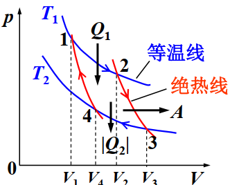
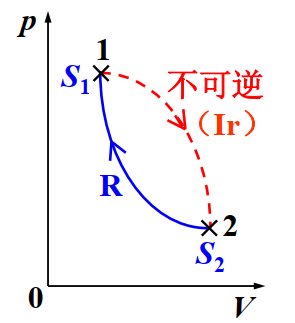
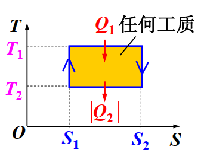
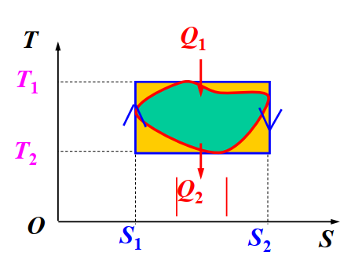

《大学物理A2》热学篇
气体动理论：研究稳态的气体
关键词 几个常数，各种速度，各种速率，各种分布，理想气体状态方程。
常数
阿伏伽德罗常量： mol
\[
N_A = 6.023\times 10^{23} 个/mol
\]
普适气体常量 ：nTR的R
\[
R=8.31 J/mol\cdot K
\]
玻尔兹曼常量：kT的k
\[
k:=\frac{R}{N_A}=1.38\times 10^{-23}J/K
\]
理想气体状态方程
\[
pV = \nu RT = nkT\\
\nu :摩尔数\\
n:分子数
\]
速率、速度分布
速率分布函数
定义
\[
f(v)dv := \frac{dN_v}N
\]
式中，f称为速率分布函数。其表示：速率在速率v所在的单位速率区间内分子数占总数的比例。
显然有
\[
\int_0^\infty f(v)dv = \int_0^N\frac{dN_{v}}N=1
\]
称为归一化条件。
麦克斯韦分布
麦克斯韦分布为一定条件下速率分布函数的具体形式。
\[
f(v)dv:=\frac{dN_v}{N}=\textcolor{red}{\left(\frac{m}{2\pi kT}\right)^{3/2}}\cdot e^{-\frac{\textcolor{green}{\frac{1}{2}mv^2}}{\textcolor{blue}{kT}}}\textcolor{purple}{4\pi v^2 dv}
\]
以下内容需要背诵
三个速率
\[
\bar v =\sqrt{\frac{\textcolor{red}{8}kT}{\textcolor{red}\pi m}}=\sqrt{\frac{8RT}{\pi M}}
\]
\[
v_{rms} = \sqrt{\frac{\textcolor{blue}3kT}{m}}= \sqrt{\frac{3RT}{\pi M}}
\]
\[
v_p = \sqrt{\frac{\textcolor{green}2kT}m}=\sqrt{\frac{2RT}M}
\]
归一化分布函数 每个维度的速度都服从正态分布
\[
g(v) = \textcolor{red}{\left(\frac{m}{2\pi kT}\right)^{1/2}}e^{-\frac{\textcolor{green}{\frac{1}{2}mv^2}}{\textcolor{blue}{kT}}}
\]
从而有速度分布函数
\[
F(\vec v)=g(v_x)\cdot g(v_y)\cdot g(v_z)=\textcolor{red}{\left(\frac{m}{2\pi kT}\right)^{3/2}}e^{-\frac{\textcolor{green}{\frac{1}{2}m(v_x^2+v_y^2+v_z^2)}}{\textcolor{blue}{kT}}}
\]
不难发现，速率分布函数即为速度空间中“球皮的质量”
且速度分布函数与方向无关
于是：
\[
\begin{aligned}
f(v)dv &=\iint_{v^2\leq v_x^2+v_y^2+v_z^2\leq (v+dv)^2} F(\left[ v_x,v_y,v_z\right]^T)dv_xdv_ydv_z\\
&=F(\left[v,0,0\right]^T)\textcolor{purple}{dV}\\
&=\textcolor{red}{\left(\frac{m}{2\pi kT}\right)^{3/2}}e^{-\frac{\textcolor{green}{\frac{1}{2}m(v^2)}}{\textcolor{blue}{kT}}}\textcolor{purple}{4\pi v^2dv}
\end{aligned}
\]
玻尔兹曼分布 ：势场下的密度分布
假设系统处于外势场中，则
\[
dN_{\vec r} = \textcolor{red}{n_0}\cdot e^{-\frac{\textcolor{green}{\varepsilon_p(\vec r)}}{\textcolor{blue}{kT}}}dV
\]
其中
\[
n_0
\]
为零势能面的分子数密度。
玻尔兹曼·麦克斯韦分布 ：势场下的速度分布，就是
\[
玻尔兹曼分布\times麦克斯韦分布
\]
\[
\begin{aligned}
dN(\vec v ,\vec r)
&= \left[\textcolor{red}{\left(\frac{m}{2\pi kT}\right)^{3/2}}e^{-\frac{\textcolor{green}{\frac{1}{2}m(v^2)}}{\textcolor{blue}{kT}}}\right]\times\left[ \textcolor{red}{n_0}\cdot e^{-\frac{\textcolor{green}{\varepsilon_p(\vec r)}}{\textcolor{blue}{kT}}}dVd\vec v\right]\\
&= \textcolor{red}{n_0\left(\frac{m}{2\pi kT}\right)^{3/2}}e^{-\frac{\textcolor{green}{\frac{1}{2}m(v^2)+\varepsilon_p(\vec r)}}{\textcolor{blue}{kT}}}dVd\vec v
\end{aligned}
\]
能量均分定理
自由度：决定物体空间坐标的独立坐标数
能量均分分定理：每个平动自由度（推广至每个平方项 ）对应平均动能为
\[
\bar\varepsilon=\frac 1 2 kT
\]
从而理想气体内能为
\[
E=(t+r+2v)\frac{1}{2}NkT
=(t+r+2v)\frac{1}{2}\nu RT
\]
平均自由程
平均自由程： 气体分子在相邻两次碰撞之间飞行的平均路程
\[
\bar \lambda = \frac{\bar v}{\bar z}
\]
其中
\[
\begin{aligned}
\bar \lambda &:平均自由程\\
\bar v &:平均速率\\
\bar z &: 平均碰撞频率\\
\bar z &= \textcolor{red}{\sqrt 2 \bar v}\cdot\textcolor{green}{\pi d^2} \cdot n\\
\Rightarrow \bar\lambda &=\frac{1}{\textcolor{red}{\sqrt 2}\textcolor{green}{\pi d^2}n}=\frac{kT}{\sqrt2 \pi d^2p}
\end{aligned}
\]
注意当容器很小的时候，需要考虑碰壁问题，此时
\[
\bar\lambda = d_容
\]
范德瓦尔斯方程
将气体分子视为有吸引力的刚性球即可得到
\[
\left(p+\frac{a}{V_m^2}\right)(V_m-b)=RT
\]
其中
\[
\begin{aligned}
a &: 常数\\
b&: 常数\\
V_m&:分子体积\\
\end{aligned}
\]
非平衡态 输运过程
输运过程包括：内摩擦（输运分子定向动量），热传导（输运分子无规则运动能量），扩散（输运分子质量），分别服从：
\[
\begin{aligned}
内摩擦&\quad df=-\eta \left(\frac{du}{dz}\right)_{z_0}dS\quad&\eta=\frac{1}{3}mn\bar v\bar \lambda&\quad:粘度\\
热传导&\quad dQ=-\kappa\left(\frac{dT}{dz}\right)_{z_0}
dSdt\quad&\kappa=\frac{1}{3}mn\bar v\bar\lambda C_V\quad&:热导率\\
扩散&\quad dM=-D\left(\frac{d\rho}{dz}\right)_{z0}dSdt\quad&D=\frac{1}{3}\bar v\bar\lambda\quad&:扩散系数
\end{aligned}
\]
热力学第一定律
关键词 过程：体积功，热容；循环：效率
热一律
\[
\textcolor{blue}{Q}=\textcolor{purple}{\Delta E}+\textcolor{red}A\\
\textcolor{blue}{吸热}=\textcolor{purple}{内能增量}+\textcolor{red}{对外做功}\\
\]
准静态过程：进展无限缓慢（远大于弛豫时间 ）的过程，认为时刻处于平衡状态
体积功
\[
dA=pdV
\]
内能
\[
E = \frac{i}{2}\nu RT
\]
内能是状态量，从而可以选择等体+等温过程方便地计算元过程的dE
\[
\begin{aligned}
dE&=dE_V+dE_T\\
&=dE_V\\
&=\nu C_{v,m}dT
\end{aligned}
\]
热容
摩尔热容
\[
C_m=\frac{dQ}{\nu dT}
\]
摩尔定体热容
\[
C_{V,m}=\frac{i}{2}R=\left.\frac{dQ}{dT}\right|_{V=V_0}
\]
摩尔定压热容(麦耶公式)
\[
C_{p,m}=\frac{i}{2}R+R=\left.\frac{dQ}{dT}\right|_{p=p_0}
\]
热容比
\[
\gamma := \frac{C_{p,m}}{C_{V,m}}=\frac{i+2}{i}
\]
绝热过程：热容正无穷
状态方程：(泊松公式)
\[
pV^\gamma=const.
\]
多方过程
\[
pV^n=const.
\]
n称为多方指数
循环
若循环的各个阶段为准静态过程，则循环过程可用状态图 ，如p-V图上闭合曲线表示。循环过程中，系统和一系列热源交换热量，一周下来系统复原，内能不变。
符号约定
\[
\begin{aligned}
Q_1\quad &:吸收的热量\\
|Q_2|\quad &: 放出的热量\\
系统对外界作净功A&=Q_1-|Q_2|>0\\
&\textcolor{red}{=循环曲线面积}
\end{aligned}
\]
从而可以定义热机效率
\[
\eta = \frac {A}{Q_1} = 1-\frac{|Q_2|}{Q_1}
\]
卡诺循环：等温+绝热

\[
\eta_c = 1-\frac{T_2}{T_1}
\]
制冷循环：反向循环
制冷系数\(\omega = \frac{Q_2}{|A|}\),卡诺制冷机\(\omega_c=\frac{T_2}{T_1-T_2}\)
热力学第二定律
关键词 熵，可逆不可逆，卡诺定律，温熵图。
热力学第二定律的等价表述
- 开尔文表述 唯一效果是热量全部转变为功的过程不可能。（否定第二类永动机的存在 ）
- 克劳修斯表述 热量不会自动从低温物体传向高温物体。（制冷系数不可能无穷大 ）
卡诺定理
- 温度相同的高温热源和温度相同的低温热源之间工作的一切热机，可逆热机效率最大。（\(\eta_{可逆}>\eta_{不可逆}\)）
- 温度相同的高温热源和温度相同的低温热源之间工作的一切可逆热机，其效率都相等，与工作物质无关。(其循环必为卡诺循环，效率为卡诺热机效率\(\eta_{可逆}=\eta_c=1-\frac{T_2}{T_1}\))
卡诺定理同样适用于制冷机
用卡诺循环定义热力学温标
- 规定水的三相点\(T_3=273.16K\)
- 卡诺热机吸放热\(\frac{|Q_2|}{Q_1}=\frac{T_2}{T_1}\)
任意可逆循环的效率
可以拆成多个小卡诺循环，推导出
\[
\eta\leq 1-\frac {T_2}{T_1}
\]
克劳修斯熵公式
对可逆循环过程
\[
\oint_R \frac{dQ}{T}=0
\]
其中\(\frac{dQ}{T}\)称为热温比。
熵\(S\)
\[
\begin{aligned}
S:&=\int_R\frac{dQ}T\\
dS&=\frac{dQ}{T}\quad(可逆元过程)
\end{aligned}
\]
结合热力学第一定律，有
\[
TdS=dE+dA
\]
只考虑体积功：
\[
TdS=dE+pdV
\]
理想气体熵公式
\[
S(T,V)=\nu C_{V,m}\ln\frac{T}{T_0}+\nu R\ln\frac{V}{V_0}+S_0
\]
由于熵是状态量，因此可以给定系统始末平衡态，任意选取可逆过程计算。
熵增加原理
克劳修斯不等式
对于一般循环：
\[
\oint\frac{dQ}{T}\leq 0
\]
其中可逆时取等号。
熵增加原理
若有循环

则对该循环
\[
\oint\frac{dQ}{T}<0
\]
从而
\[
\int_{1,IR}^2\frac{dQ}{T}+\int_{2,R}^1\frac{dQ}{T}<0
\]
其中
\[
\int_{2,R}^1\frac{dQ}{T}=S_1-S_2
\]
因此
\[
\Delta S=S_2-S_1=\int_{1,R}^2\frac{dQ}{T}>\int_{IR,1}^{2}\frac{dQ}{T}
\]
而由于绝热过程，有\(dQ=0\)，从而
\[
\Delta S_{绝热}\geq 0
\]
其中可逆过程取“=”。
热力学系统经绝热过程熵不减少，可逆绝热过程熵不变，不可逆绝热过程熵增加。
由于孤立系统进行过程必然绝热，因此
\[
\Delta S_{孤立系统}\geq 0
\]
孤立系统内一切过程熵都不会减少；熵增加原理是热力学第二定律的数学表示。
热力学第二定律的统计意义
热力学概率 任意宏观态对应的微观态数称为该宏观态的热力学概率，记作\(\Omega\)
- 平衡态\(\Omega_{bal}=\Omega_{max}\)
- 非平衡态\(\Omega_{ibal}<\Omega_{bal}\)
一个孤立系统内部自发进行的过程，总是由热力学概率小的宏观态向热力学概率大的宏观态过渡
玻尔兹曼熵公式
\[
S=k\ln\Omega
\]
回忆：理想气体有
\[
\begin{aligned}
S(T,V)&=\textcolor{red}{\nu C_{V,m}\ln\frac{T}{T_0}}+\textcolor{blue}{\nu R\ln\frac{V}{V_0}}+\textcolor{purple}{S_0}\\
&=\textcolor{red}{速度熵}+\textcolor{blue}{位形熵}+\textcolor{purple}{S_0}
\end{aligned}
\]
无序性增加\(\rightarrow\)熵增加。
温熵图
用温熵图（T-S）反应过程中状态的关系，则由于
\[
Q=\int TdS
\]
因此循环中吸热为温商曲线所围面积。


参考资料
- 《大学物理A(2)》课件
- 《大学物理（力学，热学）》，张三慧 著
{kind=link}
{kind=link}
{kind=link}
{kind=link}
{kind=link}